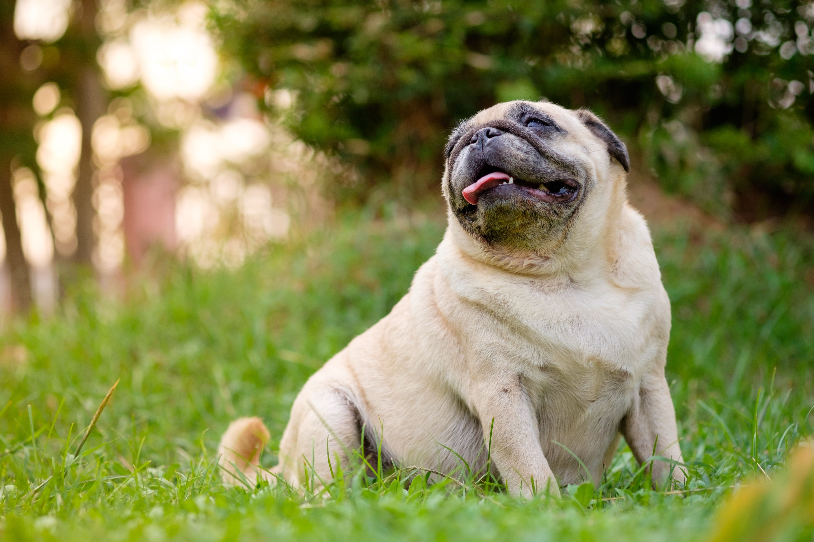

Pugs are a delightful breed with a unique appearance and a lot of personality packed into a small body. Known for their wrinkled faces, round eyes, and curly tails, pugs have been a beloved pet choice for centuries. They are charming, loyal, and known for their quirky antics that can make anyone smile. Pugs have an ancient history, with their origins tracing back to imperial China, where they were kept as lapdogs for royalty.
Despite their royal beginnings, pugs are now one of the most popular breeds worldwide and are adored for their gentle and friendly nature. They tend to get along well with people of all ages and other animals, making them excellent family pets. Their affectionate personality means they thrive on human attention and love being the center of attention in any setting. They are known for being expressive, often communicating through funny snorts and expressive eyes.
In addition to being great companions, pugs are relatively easy to care for, though they do have some special needs. Due to their short snouts, pugs can be prone to breathing issues, so it’s essential to keep them cool, especially in hot weather. They also need regular grooming, particularly around their wrinkles, to stay clean and healthy. Overall, pugs are the perfect choice for anyone looking for a devoted and fun-loving companion.
